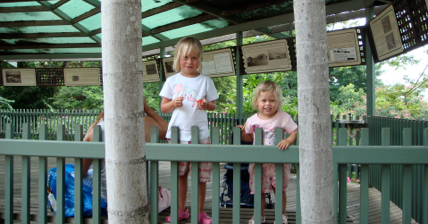

Northern Territory

Darwins dramatiske historie
fredag den 7. december 2007

Darwin er et pudsigt sted. På den ene side er Darwin et knudepunkt pga. sin beliggenhed og store havn, hvilket gør byen til et naturligt ankomst sted for varer fra Asien. Der er også kortere til Singapore end der er til Sydney. På den anden side er her meget øde og så sker der ikke det store. den største turistattraktion er et sted, hvor man kan fodre fisk. Her er så til gengæld også rigtig mange fisk, og de kommer alle af sig selv ude fra havet.
Darwin har ellers oplevet lidt af hvert. Tilbage i 1942 under 2. verdenskrig, blev byen totalbombet af japanerne pga sin strategiske beliggenhed. Og i 1974 smadrede cyklonen Tracy samtlige huse i byen undtagen et par hundrede. det betyder at det Darwin man møde i dag stort set er bygget inden for de sidste 30 år - altså ingen gamle huse overhovedet. I dag er Darwin hovedstad for Northern Territory og byen har sit egen parlamentsbygning, der af de lokale kaldes for lagkagen fordi som de siger: “It is full of fruits and nuts, and it smells like alcohol”, efter sigende har parlamentsbygningen 20 barer ...
3 timers buskørsel herfra ligger naturreservatet Kakadu National Park. Parken er på størrelse med Vietnam, så det er ikke et sted, man klarer på en times tid ...
Vi når det ikke denne gang, men til gengæld hopper vi i morgen på toget til Adelaide. Der er tale om en klassisk togtur kaldet “The Ghan” opkaldt efter ruten der i gamle dage fungerede som kamel rute for Afghanere. Det skal nok blive en spændende tur.
Med fin udsigt over havnen, kunne vi læse alt om Darwins rimelig dramatiske historie. Med minearbejdere, olieboringer og miltærbase, er det ikke et sted for sarte sjæle ...